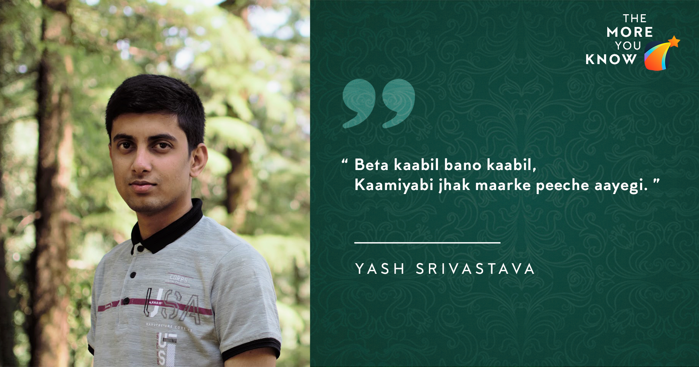

May 27, 2020
Hello, everyone! My name is Yash Srivastava and I am a third year (Y17) undergraduate student in the department of Electrical Engineering. In this blog I would be sharing my internship preparation experience through which I was able to secure an internship at Texas Instruments, Bengaluru. First of all, I should clarify that no strategy can be taken as ‘the perfect one’ to prepare for the internship process, but I will share a few points which might be helpful in your preparation.

Pre-Intern Prep
So, let me begin with my experience. When I came to the campus in my first year, I had very little (or no) idea of what awaits me in the upcoming years. Though, by the end of the first semester, I had come to know that I will be sitting for interns in the beginning of the third year. But, since I was not very sure about my field of interest, I did not start preparing for it. I decided to explore various fields first and choose the one that suits me the best. I was motivated to take up an intern in core engineering since I had very little inclination towards coding. But, since most of the companies require coding jobs, I would strongly encourage you all to practice coding. I took up a project in my second year winter break and continued with it till summers. Being from the EE department is always a bonus. Apart from this, the other factors which I think, affect the chances of being selected are CPI (mine was 8.7), JEE rank, scholastic achievements and PoRs. Apart from this, some firms also look for students who have done projects similar to their requirements. But the overall process can be quite ambiguous at some times, so it would be better not to focus on any one kind of profile but on an overall profile. Although, I did not do a lot of extra preparations for the interns, I would encourage you to go through MSO201 for quant profiles and ESC201 and a bit of EE210 for core electrical interns.
Experience of the Selection Process
The internship process began in the first week of my fifth semester and the interview process began from the second weekend. In the first week, most of the online tests were conducted after which students were shortlisted for interviews or GDs. On the first day, I was shortlisted ( later rejected :|) by Goldman Sachs for the quant profile. The shortlisting process can be perplexing at times because companies don’t reveal the factors that they look into while shortlisting a candidate and different companies have different criteria. But if you have a decent CPI(8.0+) and a few extra curricular activities or projects, then they will shortlist you. Some of the companies select solely on the basis of tests which generally involve coding,reasoning/mental ability, puzzles, probability & statistics , general english and core subjects ( for core companies). On day 3, I got interviewed ( and rejected :| ) by American express, and then on Day 4, by Kivi capital. Only advice I would give for these companies is that please revise MSO201 thoroughly and practice puzzles from fifty challenging problems
(http://www2.washjeff.edu/users/mwoltermann/Mosteller/contents.htm)
and any other website such as GFG
(https://www.geeksforgeeks.org/puzzles/) or interviewbit.com .
After being rejected by all these companies I sat in the test for TI. The test consisted of three sections: 20 questions of reasoning/aptitude, 20 questions on analog electronics and 20 questions on digital electronics. The digital electronics part was unknown to us, since that had not yet been covered (EE370 is taught in the 5th semester). The analog part mostly consisted of questions from ESC201 and EE210 and I think I was able to do about 12-13 questions correctly. The aptitude section was easy and could be solved completely. Most people were able to solve 9-10 questions easily in the analog section. On the basis of the test (and some luck), I was selected for the interview (once again). The interview process began with a PPT presentation and we had to go through around 2-3 hours of interview. About 20 students were shortlisted and 4 were selected (much less than previous years). The interviewer kept my resume aside, gave me a sheet of paper and then began the tussle. He started with RC circuits and then quickly jumped to the small circuit model of a BJT. Then he came back to RC circuits. He was looking for voltage and current curves and time constants through observation. Then he moved to bode plots and again asked me to draw bode plots by just observing the circuit, which was difficult. In the RC and RL circuits, both transient and frequency analysis were asked. He also asked me to solve some problems from the computer based test to check my approach. Questions on op-amps(as a black box only) like characteristics of an ideal op-amp were also asked. The questions revolved around the basic understanding of the working of electronic devices such as diodes,BJTs,opamps, R,L and C and their characteristics. I was able to avoid MoSFET questions since we were not very comfortable with it in the starting of the 5th semester. During the interview, if you are given to solve any problem, try to think loud rather than just thinking in your mind.This will help the interviewer understand your thought process and that is what they want to know.
The first round lasted for around 1 hr 30 mins and I was told by the HR to come back after having my dinner. I came back around 12. Till then, many students had left and only a few were asked to stay back. Then around 1 am, I was called for another round of interview and that was disastrous. This time there were 2 interviewers. Questions involving current balance and volt-sec balance were asked and I was unable to understand even the hints that they were giving because of drowsiness. Then somehow I was finally called for the HR interview. It was a 10 minutes interview and general questions were asked about my family background, my life at the college and why I was interested to work in this field. Most important question that they ask is about your future plans. This I leave up to you, but I can tell you what they don’t like to hear. Since most of the companies hire interns to whom they can offer PPOs , they don’t like to hear MS or MBA as a future plan.
Concluding Tips
So this sums up my internship interview experience. One of the most important things is your resume, which you need to prepare carefully. The resume should look neat and not very clumsy. If possible, please try to make different resumes for different profiles. Not many changes are needed. Just understand the profile that you are applying for and highlight the relevant coursework and related projects (if any). If you have done ESO207 (even not, then also you can try), then you should be doing competitive programming in the summers. I think resume making session would have taught you in great detail about the points that you need to include. You can get sample resumes and templates from your friends or seniors and make sure you prepare your resume during the summer itself. I would also suggest you to not target a particular company but rather focus on your academics. As Rancho says ‘Kaabil bano, Kaamyabi jhak marke peeche aayegi’. If you still have any doubts, please feel free to ping me on facebook messenger.
Thank You
- Yash Srivastava